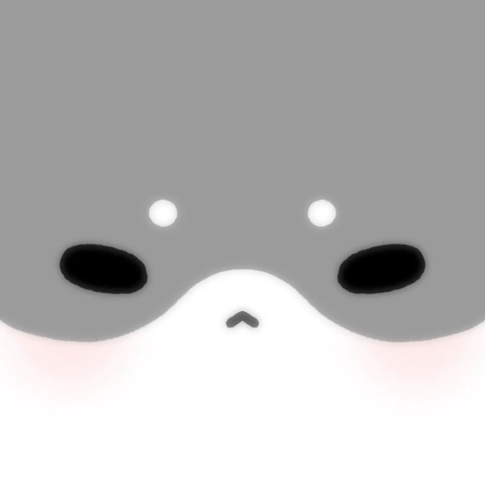

更换
在线
个人标签
本站为私密站点，实行一机一码制。
请联系管理员获取激活码。

默认昵称I D I C
Infinite Diversity in Infinite Combinations.

与你的AI伙伴们在这个充满谎言与推理的村庄里一决高下。
主聊天的能力设置已经拆开了。后面继续加生图、TTS、更多 provider 时，也不用再把所有内容塞回一个长页里。
主 API、副 API、上下文与采样参数都收在这里，保持主聊天模型相关设置集中。
开启后使用针对 Gemini 3 优化的提示词，关闭则使用 2.5 Pro 经典版。
数据库、脱水、向量与重构策略全部收口在这一页，不再和聊天 API 混在一起。
supabase/idic_proactive_messages_bootstrap.sql，部署
idic-proactive-dispatcher，再用 Supabase Cron 定时请求该函数。用于海马体记忆存储。请填写你自己 Supabase 项目的 URL 和 Publishable Key。
用于找回更新后看不到的旧海马体记忆。它只生成诊断信息和 Supabase SQL，不会在手机端直接改库。
用于提取记忆事件，推荐使用 OpenAI 兼容的国内聊天模型（如 DeepSeek、GLM-4.7-Flash）
用于语义搜索，不配则自动降级为关键词搜索。注意：当前数据库固定 1536 维，智谱 embedding-3 官方输出为 256 / 512 / 1024 / 2048 维，不原生匹配。
这里只影响“自动触发”的重构。管理台里的手动重构仍然可以单独试跑，用来检查整事件改写是否稳。
音乐相关入口单独收口。Suno 的 key、音乐后端地址、网易云登录都不再塞在通用设置里。
先把腾讯云 ASR 和输入模式收进独立页，之后加更多语音识别 provider 时也更好扩展。
导出备份时会直接上传到你自己的腾讯云 COS，并生成 7 天有效的私有签名下载链接。
通用参数、不同 provider 的差异化配置、离线剧情插图默认行为都集中放在这里，尽量减少对主聊天逻辑的侵入。
未检查
当前模型若不支持参考图直传，会自动回退为文本锚点与参考包。
如果你觉得同样的人设在 ChatGPT app 里更贴脸，优先试 `auto` 或 `responses`。
Prompt 编译器后面会强制读取最近聊天、人设、世界书、长期记忆、海马体补充和视觉参考包，不会只吃一行图片描述。
这里设置语音气泡播放和通话播报使用的 TTS。
这里保存的是“可复用模板”。角色进入线下模式时可以直接使用全局默认预设；全局世界书默认会挂到每个角色，也可以在单个角色编辑页关掉。
预设条目会按这里的顺序拼进线下模式提示词；关掉的条目会保留在预设里，但不会发送给 AI。常见酒馆宏如 {{setvar::变量::内容}}、{{getvar::变量}} 会在发送前自动解析。
还没有载入预设。可以先导入酒馆预设，或点“添加预设条目”自己写。
还没有正则规则。导入带正则的酒馆预设，或点“添加全局正则”。
还没有全局世界书条目。可以导入 JSON，也可以点“添加条目”。
开启后，这个角色的聊天、日程、GPS 与蝴蝶效应会按虚拟时间流动；论坛、联机大厅不受影响，群聊可单独设置场景时间。
这些 NAI 预设只会在 NovelAI 或 NAI 中转模型下合并进 prompt。
这些文本不会直接展示给用户，只会作为角色固定形象和场景连续性的约束。
只影响本群发言、群内事件记录和群聊记忆同步；不会改动成员的单聊虚拟时间、日程或蝴蝶效应。
支持 SillyTavern JSON / PNG 角色卡；如果角色卡里带世界书，会一起导入。
请先在 全局设置 -> 角色表情包管理 中添加分组
检测到您有大量历史对话，可兑换为初始资金。
预计可获得: 0 币
暂无收支记录
你还没有写过日记哦~
TA还没有写过日记呢~
正在准备放映中，请稍候...
提示：多个标签请用空格或逗号隔开
为【】分类生成了以下新品，请勾选你想保留的：
点击拆开外卖
...
...
AI会根据你的输入，自动补充其他地点并生成地图。

输入关键词，发现好音乐
提示：Kiki 主题下不应用“全局美化 CSS”。
粘贴 CSS 代码，保存为预设，随时一键应用。

这个人很神秘，什么都没留下...
请选择创建虚拟歌手的方式：
已为你生成以下2首试听Demo，请选择你满意的声线进行签约：
你想让TA继续说，还是换个说法？
点击图片可放大预览并手动保存。
收到的红包已存入余额
拿到这个链接的人在有效期内都可以下载该备份。请仅分享给可信对象。
根据你选择的模式，采用不同的侧重点来总结你们的对话。
(不填则默认总结全部新消息)
加载完成！
在这里预览生成的剧本...
“正在构思个性签名...”
形象展示区 (开发中)
你好！我是这个网页的开发者。
我知道，当网页请求“摄像头权限”时，你心里可能会犯嘀咕：“这安全吗？我的隐私会不会泄露？”
作为一个纯前端开发的独立开发者，我和你一样看重隐私。在这里，我想用最直白的话，向你解释这个网页是如何工作的：
简而言之：这是一个属于你的、私密的 AI 终端。我只负责提供代码工具，而数据和隐私，完全归你所有。
祝你和TA聊得开心！✨
为了消除疑虑，以下是部署在服务器上的完整代码。你可以看到它没有任何数据库存储或日志记录的操作。
// 文件：netlify/functions/proxy.js
const axios = require('axios');
exports.handler = async function(event, context) {
// 1. 获取前端传来的目标 URL
const targetUrl = event.queryStringParameters.url;
if (!targetUrl) {
return {
statusCode: 400,
body: JSON.stringify({ error: '没有提供目标URL' }),
};
}
try {
const decodedUrl = decodeURIComponent(targetUrl);
// 2. 准备请求头 (只透传必要的认证信息，不记录日志)
const headersToSend = {
'User-Agent': 'Mozilla/5.0 ... Chrome/118.0.0.0 Safari/537.36'
};
const lowerCaseHeaders = Object.keys(event.headers).reduce((acc, key) => {
acc[key.toLowerCase()] = event.headers[key];
return acc;
}, {});
if (lowerCaseHeaders['authorization']) {
headersToSend['Authorization'] = lowerCaseHeaders['authorization'];
}
if (lowerCaseHeaders['x-requested-with']) {
headersToSend['X-Requested-With'] = lowerCaseHeaders['x-requested-with'];
headersToSend['Referer'] = 'https://music.163.com/';
}
if (event.httpMethod.toUpperCase() !== 'GET' && event.body) {
headersToSend['Content-Type'] = 'application/json';
}
// 3. 准备请求体 (Body)
let requestData;
try {
if (event.body) {
requestData = JSON.parse(event.body);
}
} catch (e) {
requestData = event.body;
}
// 4. 发起请求 (使用 axios 转发)
const response = await axios({
method: event.httpMethod,
url: decodedUrl,
headers: headersToSend,
data: requestData,
});
// 5. 返回结果给前端
return {
statusCode: 200,
headers: {
'Access-Control-Allow-Origin': '*',
'Content-Type': 'application/json',
},
body: JSON.stringify(response.data),
};
} catch (error) {
const errorResponse = error.response ? error.response.data : { proxy_error: error.message };
return {
statusCode: error.response ? error.response.status : 500,
body: JSON.stringify({
error: "代理请求失败",
details: errorResponse,
target_url: decodeURIComponent(targetUrl)
}),
};
}
};
决定每天早上自动生成突发事件的几率。
这里决定了TA每天早上生成日程时，随机到的“今日运势”好坏比例。
| 关键词 | 八股词/义项 | 替换为 | 原因 | 操作 |
|---|
暂无保存地址
正在编织回忆...
...
正在呼叫...
以下关键词在库中已存在。请选择保留哪一个版本：